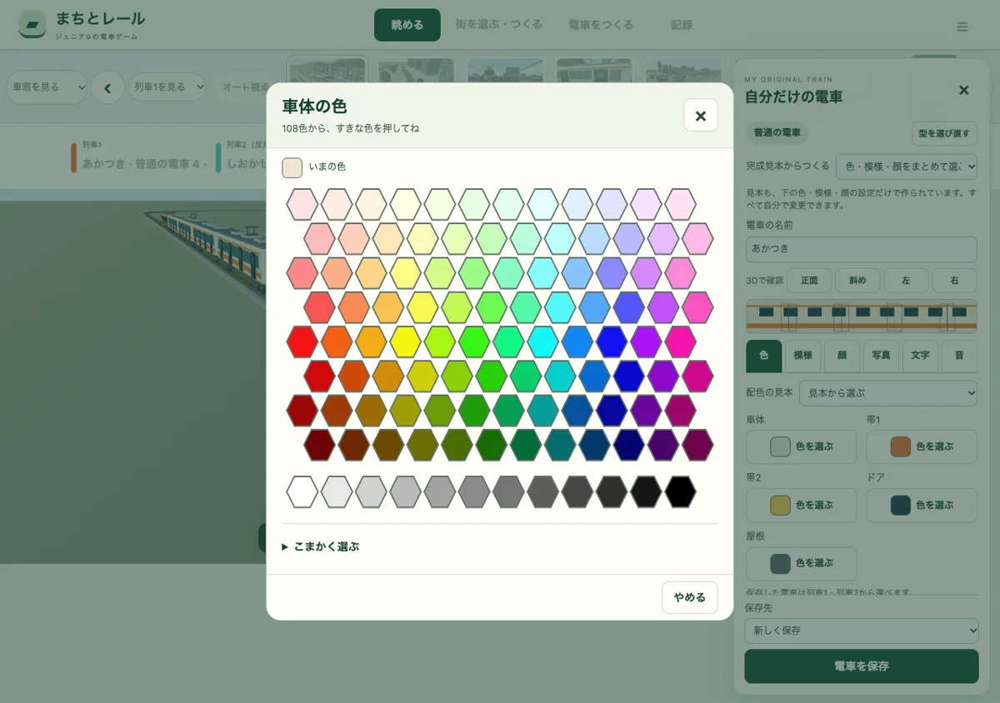

自分で電車を作るゲーム
車体の色や帯、顔を組み合わせ、自分で名付けた電車を街に走らせます。

最初の一台を仕上げる
「電車をつくる」を開き、普通の電車など好きな車種を選びます。「色」で車体と帯に違う色を使うと、横から見たときに帯がはっきり見えます。「顔」では正面の表情を変えられます。
色違いを並べてみる
電車に名前を付け、保存先で新しい電車として保存します。もう一台は帯の色だけ変えて別の名前で保存。「電車を選ぶ」で二台を見比べ、好きな方で発車してみましょう。
ゲームで試す →